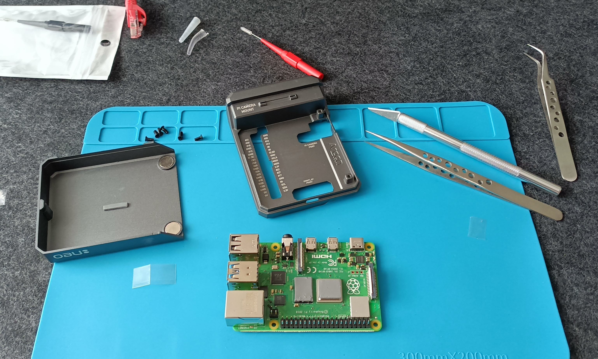
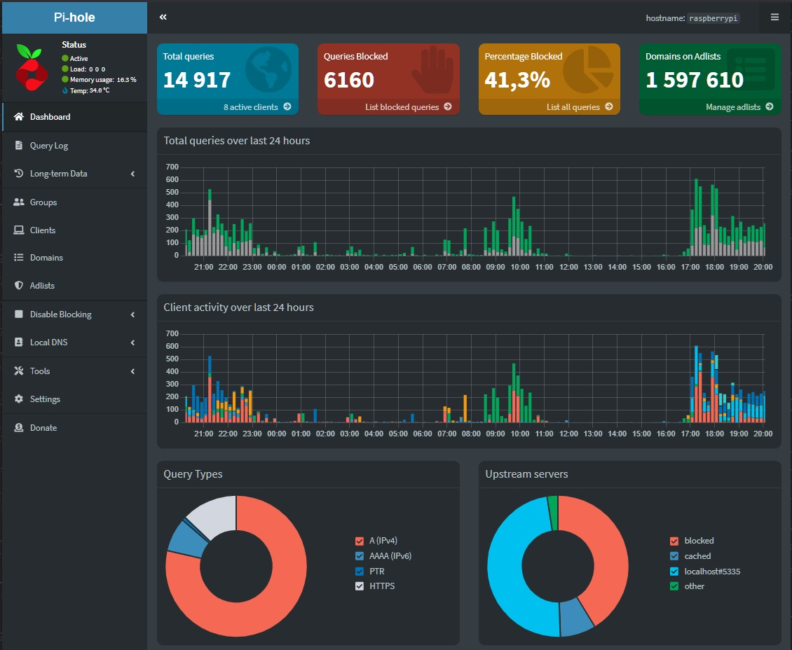

This project involves installing and configuring Pi-hole, Unbound, and Pi-VPN on a Raspberry Pi 4B...
For this project, I chose Raspberry Pi 4B with 1GB RAM, which is sufficient for the first phase. I was very positively surprised by the performance of Raspberry Pi OS Lite after installing Pi-hole, Pi-VPN, and Unbound. The entire setup uses no more than 250MB of RAM.
To install Pi-hole, first set up Raspberry Pi OS Lite. Instructions can be found here. Once configured, install Pi-hole using the command:
curl -sSL https://install.pi-hole.net | bash
Follow the on-screen instructions. More details can be found in the official documentation.
The main goal was to block domains published by CERT Polska. The full list of blocked domains from CERT Polska can be found here.
Additionally, I have included the following blocklists:
After adding all these lists, I now have a total of 1,597,610 blocked domains. However, the number of lists you import is entirely up to you. Be cautious—adding too many lists doesn’t always mean better protection. You might end up blocking access to many legitimate websites.
By default, Pi-hole updates blocklists every 7 days. I prefer updates every 6 hours, so I configured a cron job:
crontab -e
0 */6 * * * /usr/local/bin/pihole -g > /dev/null 2>&1
Unbound is a powerful DNS resolver that adds an extra layer of privacy and security to your network. Unlike traditional DNS resolvers, Unbound is a validating, recursive, and caching DNS resolver. This means that it not only resolves DNS queries but also checks the integrity of the responses, ensuring they are legitimate and have not been tampered with. When combined with Pi-hole, Unbound allows for a completely self-hosted DNS solution, avoiding reliance on third-party DNS providers and further protecting your privacy.
To set up Unbound on your Raspberry Pi, follow these steps:
First, you need to install Unbound on your Raspberry Pi:
sudo apt-get update
sudo apt-get install unbound
Once installed, you need to configure Unbound to work seamlessly with Pi-hole. To do this, you must create a configuration file for Pi-hole:
sudo nano /etc/unbound/unbound.conf.d/pi-hole.conf
The configuration for Unbound can be found on the official Pi-hole documentation page: Pi-hole Unbound Guide. Copy the configuration from this page and paste it into the file on your server.
After configuring the file, you need to restart Unbound for the changes to take effect:
sudo service unbound restart
To ensure that Unbound is properly handling DNS queries, you can test it using the dig command. This will query Unbound directly on the Pi-hole's local address and port 5335:
dig pi-hole.net @127.0.0.1 -p 5335
If everything is working correctly, you should receive a valid DNS response from Unbound. You can also check the Pi-hole's web interface to verify that it's using Unbound as the upstream DNS provider.
Unbound’s caching feature can significantly improve response times for DNS queries by storing recently resolved domains locally. You can adjust the caching settings in the Unbound configuration to optimize for your needs. For example, you can set the maximum time to cache a DNS response with the cache-max-ttl directive or reduce the time for less frequently accessed domains with the cache-min-ttl directive.
Another important feature is DNS filtering. By using Pi-hole with Unbound, you can ensure that all queries for malicious domains or ads are filtered at the DNS level before they ever reach your devices, thus improving both security and performance. You can extend Pi-hole’s blocklists with additional sources or custom domains you wish to block, which is a great way to ensure comprehensive protection.
Unbound logs detailed information about the queries it processes. You can monitor these logs to troubleshoot issues or understand more about the DNS traffic on your network. To view the Unbound logs, use the following command:
sudo tail -f /var/log/unbound/unbound.log
Integrating Unbound with Pi-hole provides a robust, secure, and private DNS setup. By running Unbound on your local network, you eliminate the reliance on third-party DNS providers, ensuring that all DNS queries are validated and encrypted. With features like DNSSEC, caching, and advanced filtering, Unbound significantly enhances your network's privacy, security, and performance. It works hand-in-hand with Pi-hole to provide a comprehensive solution that blocks ads and malicious domains while optimizing DNS resolution speed.
For more information and advanced configurations, you can visit the official Pi-hole Unbound Guide.
PiVPN is a lightweight VPN solution that allows you to create a secure connection to your home network from anywhere. By using PiVPN, you can encrypt your internet traffic, access devices within your local network remotely, and enhance your overall privacy. When combined with Pi-hole and Unbound, PiVPN ensures that all your traffic is securely tunneled while benefiting from ad-blocking and private DNS resolution.
To install PiVPN on your Raspberry Pi, follow these steps:
Run the following command to start the installation process:
curl -L https://install.pivpn.io | bash
Follow the interactive setup and choose your preferred VPN protocol (WireGuard or OpenVPN). WireGuard is recommended for its performance and efficiency.
After installation, create a VPN client profile:
pivpn add
Download the generated configuration file and import it into your VPN client application (WireGuard or OpenVPN) on your device.
For the VPN to function correctly, you need to allow external connections to your Raspberry Pi. This requires port forwarding on your router:
This configuration ensures that VPN connections from the internet are properly forwarded to your Raspberry Pi. Without this, external devices wouldn't be able to establish a secure connection.
To verify that your VPN is working correctly, connect to your home network using the VPN client and check your public IP address:
curl ifconfig.me
If the output matches your home network's external IP, the VPN is correctly routing your traffic.
For additional security, consider these steps:
By setting up PiVPN with proper port forwarding, you ensure secure and private access to your home network from anywhere. When combined with Pi-hole and Unbound, this creates a robust security and privacy solution that encrypts traffic, blocks ads, and prevents DNS leaks. For more information, visit the official PiVPN website.
The results of this project have exceeded my expectations. Pi-hole, combined with PiVPN, has proven to be an incredibly effective solution for improving network security, privacy, and accessibility.
By using PiVPN, I can securely access my home network from anywhere in the world, ensuring that my internet traffic remains encrypted and protected. This is especially useful when connecting from untrusted networks, such as public Wi-Fi hotspots, where security risks are high. Additionally, routing all VPN traffic through Pi-hole allows for network-wide ad blocking and protection against malicious domains, even when browsing remotely.
Pi-hole’s easy-to-use web interface continues to provide seamless monitoring of DNS queries, giving me full control over which domains are being accessed on my network. The ability to block entire categories of unwanted content and integrate additional blocklists, such as those from CERT Polska, Firebog, and AdAway, significantly enhances protection against threats like phishing and malware.
Another notable benefit is the reduction in bandwidth consumption, as ads and unnecessary content are blocked at the DNS level before they even load. This not only improves browsing speeds but also enhances privacy by ensuring that tracking domains are blocked in real-time, both locally and while using PiVPN remotely.
With proper router configuration and port forwarding, PiVPN has seamlessly integrated into my network setup. The ability to securely tunnel my internet traffic, block unwanted content, and maintain full control over my DNS queries makes this combination an essential tool for anyone looking to enhance their network’s performance and security.
